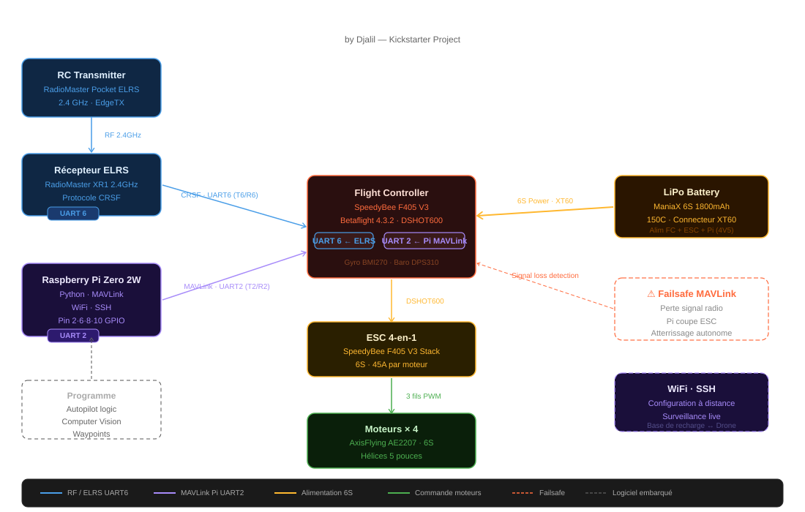
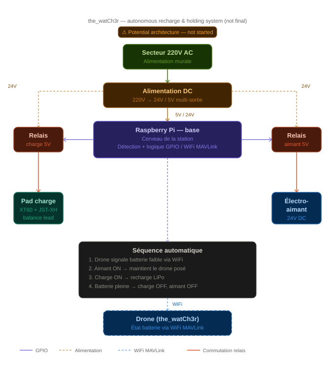

Technology
A full breakdown of the hardware, firmware, and systems that power our autonomous drone platform.
| Parameter | Value |
|---|---|
| Frame Size | 250mm diagonal |
| Total Weight (no payload) | ~310 g |
| Max Takeoff Weight | 650 g |
| Propellers | 5-inch, 3-blade |
| Frame Material | Carbon fiber |
| Motors | AxisFlying AE2207 V2 — 6S ×4 |
| Battery | ManiaX 6S 1800mAh LiPo — 150C XT60 |
| Estimated Flight Time | 12 – 18 min (mission dependent) |
| Max Operational Range | ~800 m (with telemetry link) |
| Component | Details |
|---|---|
| Flight Controller | SpeedyBee F405 V3 Stack (FC + 4-in-1 ESC) |
| ESC Protocol | Multishot |
| Firmware | INAV |
| RC Receiver | RadioMaster XR1 — ELRS 2.4 GHz on UART6 |
| RC Protocol | CRSF |
| RC Transmitter | RadioMaster Pocket |
| GPS Module | In transit — u-blox M10 compatible |
| Companion Computer | Raspberry Pi |
| MAVLink Bridge | UART2 — configured, ready for Raspberry Pi |
| ARM Switch | CH5 |
| Failsafe | Land (RTH when GPS arrives) |
| Camera (surveillance) | Onboard — in development |
| Component | Details |
|---|---|
| Controller | Raspberry Pi |
| Holding mechanism | Electromagnet |
| Charging contacts | 2× relay pads (XT60 + JST-XH balance) |
| Precision docking | Pogo pins |
| Communication | WiFi / MAVLink |
| Power supply | 220V AC → 24V / 5V DC |
| Estimated cost | ~150€ |
Complete hardware connection diagram — from the flight controller to the Raspberry Pi, ESCs, motors, GPS, and battery.


The heart of The Watcher — purpose-built hardware and firmware that give us full control over every aspect of flight behavior.
Custom PID loops tuned for The Watcher's exact airframe. Rate mode, angle mode, and GPS position hold — each flight mode written and optimized by hand.
ImplementedBinary telemetry over 433 MHz LoRa: real-time attitude, GPS position, battery state, and mission status transmitted at 10 Hz to the ground station.
ImplementedWatchdog timers, link-loss failsafe with return-to-home, low-battery failsafe, and geofence enforcement — all baked into the firmware, not bolted on.
ImplementedCustom airframe design, motor and ESC selection, initial PCB layout and assembly for the flight controller board.
PID control loops from scratch, IMU sensor fusion, manual flight testing, and complete safety failsafe logic.
GPS waypoint missions, altitude hold, return-to-home, and companion computer integration for higher-level mission planning.
Real-time telemetry dashboard, visual mission planning interface, geofence editor, and flight replay analysis.
Onboard obstacle detection, visual target tracking, and autonomous landing zone recognition using the onboard camera and Raspberry Pi.